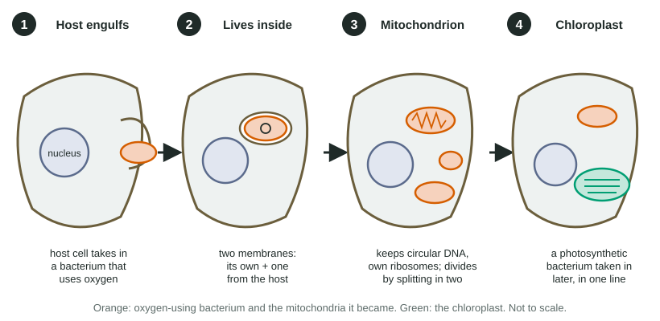

Unit 2 · 10 to 13% of the exam Beta
Unit 2 practice test: Cell Structure and Function
twelve questions, every option explained
12 exam-style questions from the unit, free, with an explanation for every option. Sets share one table, graph or experiment, as on the real exam. Covers: Cell Structure and Function; Cell Size; Plasma Membrane; Membrane Permeability; Membrane Transport; Facilitated Diffusion; Tonicity and Osmoregulation; Mechanisms of Transport; Cell Compartmentalization; Origins of Cell Compartmentalization.

Data table
A lysosomal enzyme at different pH values
A lysosomal enzyme that breaks down proteins by hydrolysis was purified. Students mixed equal amounts of it with the same protein at five pH values, all at 37 °C, and measured how much protein it broke down in one hour (mean of 3 trials). The inside of a lysosome is about pH 4.5 to 5; the cytosol is about pH 7.2.
| pH | Protein broken down (µg per hour) |
|---|---|
| 3.5 | 18 |
| 4.5 | 42 |
| 5.0 | 46 |
| 6.0 | 21 |
| 7.2 | 3 |
1. Which statement best describes the data?
- The enzyme breaks down protein fastest at pH 7.2, the pH of the cytosol.
- The enzyme breaks down protein fastest near pH 4.5 to 5.0 and very slowly at pH 7.2.
- The amount of protein broken down rises steadily as the pH rises from 3.5 to 7.2.
- The enzyme breaks down about the same amount of protein at each pH that the students tested.
Show the answer
The enzyme breaks down 42 to 46 µg per hour at pH 4.5 to 5.0, less on either side, and just 3 µg per hour at pH 7.2.
- The enzyme breaks down protein fastest at pH 7.2, the pH of the cytosol.: At pH 7.2 the enzyme breaks down only 3 µg per hour, the lowest value in the table.
- Correct: The enzyme breaks down protein fastest near pH 4.5 to 5.0 and very slowly at pH 7.2.: This matches the table: a peak near pH 5, falling steeply toward neutral.
- The amount of protein broken down rises steadily as the pH rises from 3.5 to 7.2.: The values rise from 3.5 to 5.0 and then fall, so there is no steady rise.
- The enzyme breaks down about the same amount of protein at each pH that the students tested.: The values range from 3 to 46 µg per hour, more than a fifteenfold difference.
2. If a lysosome leaks a few enzyme molecules into the cytosol, the cell is usually not harmed. Which explanation is best supported by the data?
- At the cytosol's pH of 7.2, the enzyme works at under a tenth of its fastest pace.
- The cytosol is more acidic than the lysosome, and the enzyme does not work in acid.
- Proteins in the cytosol are made of different amino acids from those the enzyme attacks.
- The enzyme works faster in the cytosol, so it finishes its job before it reaches anything important.
Show the answer
At the cytosol's pH (7.2) the enzyme breaks down only 3 µg per hour, against 46 at its best. A few leaked molecules work too slowly to do much damage.
- Correct: At the cytosol's pH of 7.2, the enzyme works at under a tenth of its fastest pace.: This uses the table's value at pH 7.2 to explain the low damage.
- The cytosol is more acidic than the lysosome, and the enzyme does not work in acid.: The cytosol (pH 7.2) is less acidic than the lysosome (pH 4.5 to 5), and the enzyme works best in acid, not worst.
- Proteins in the cytosol are made of different amino acids from those the enzyme attacks.: Cell proteins are built from the same 20 kinds of amino acids, so this does not explain the protection.
- The enzyme works faster in the cytosol, so it finishes its job before it reaches anything important.: The table shows the enzyme works much more slowly, not faster, at the cytosol's pH.
3. A drug raises the pH inside lysosomes from about 4.8 to about 7.0. What is the most likely result after several days?
- Worn-out organelles break down faster, so the cell has fewer lysosomes.
- The enzymes leave the lysosomes and digest the cytosol, killing the cell within minutes.
- Undigested material builds up inside the lysosomes, which swell.
- The cell stops making the enzyme, because it is no longer needed.
Show the answer
At a pH near 7 the enzymes work at a small fraction of their usual pace, so material delivered to lysosomes is broken down far more slowly and accumulates.
- Worn-out organelles break down faster, so the cell has fewer lysosomes.: Raising the pH slows the enzymes, so breakdown is slower, not faster.
- The enzymes leave the lysosomes and digest the cytosol, killing the cell within minutes.: The drug changes the pH inside the lysosome; it does not release the enzymes, and at pH 7 they work slowly anyway.
- Correct: Undigested material builds up inside the lysosomes, which swell.: Material keeps arriving but is digested far more slowly, so it builds up.
- The cell stops making the enzyme, because it is no longer needed.: Nothing in the data says the cell stops making the enzyme; the problem is that the enzyme works poorly at the new pH.
Model
A model of endosymbiosis
The model shows the endosymbiotic theory in four steps. Use it with what you know about cells to answer the questions.

4. In step 2 of the model, the bacterium is surrounded by two membranes. According to the model, where does the outer membrane come from?
- The host cell's plasma membrane, which wrapped around the bacterium as it was taken in
- The bacterium's cell wall, which turned into a membrane once it was inside
- A second bacterium that was taken in at the same time and fused with the first
- The host cell's nucleus, which sent a layer of its own envelope around the bacterium
Show the answer
The host engulfed the bacterium the way a cell takes in a particle by endocytosis: its plasma membrane closed around it. In this model the inner membrane is the bacterium's own and the outer comes from the host.
- Correct: The host cell's plasma membrane, which wrapped around the bacterium as it was taken in: Correct: the engulfing membrane becomes the outer layer around the bacterium.
- The bacterium's cell wall, which turned into a membrane once it was inside: A cell wall is not a membrane, and it does not turn into one; the model shows the host's membrane wrapping around.
- A second bacterium that was taken in at the same time and fused with the first: The model shows a single bacterium being taken in.
- The host cell's nucleus, which sent a layer of its own envelope around the bacterium: The model's outer membrane forms where the host's surface wraps around the bacterium, not from the nucleus.
5. According to the model, why do plant and algal cells have both mitochondria and chloroplasts, while animal cells have only mitochondria?
- Mitochondria came first; a photosynthetic bacterium was later taken in by one line of those cells.
- Chloroplasts were gained first, and animal cells later lost theirs while keeping their mitochondria.
- Both were gained at the same moment, and animal cells later turned their chloroplasts into mitochondria.
- Plant cells are larger, so they had room to take in two kinds of bacteria at once while animal cells did not.
Show the answer
The model shows step 3 (mitochondria) before step 4 (chloroplast, in one line). Every descendant of the first event has mitochondria; only descendants of the later event have chloroplasts as well.
- Correct: Mitochondria came first; a photosynthetic bacterium was later taken in by one line of those cells.: Correct: the order of events explains why one organelle is nearly universal and the other limited to one group.
- Chloroplasts were gained first, and animal cells later lost theirs while keeping their mitochondria.: The model has mitochondria first; nothing in it shows animals losing chloroplasts.
- Both were gained at the same moment, and animal cells later turned their chloroplasts into mitochondria.: The model shows two separate events, and the organelles differ in membranes, DNA and job.
- Plant cells are larger, so they had room to take in two kinds of bacteria at once while animal cells did not.: Cell size does not explain the pattern; the order and branching of the events does.
6. Which new finding would most strongly support the model?
- Mitochondrial DNA matches DNA of certain living bacteria better than it matches the cell's nuclear DNA.
- Mitochondria are found in the cells of most eukaryotes, including animals, plants, fungi and many single-celled groups.
- Mitochondria move around inside the cell along the cytoskeleton, toward regions that need more ATP.
- Cells with more mitochondria use more oxygen than cells with fewer mitochondria in the same tissue.
Show the answer
The model says mitochondria descend from bacteria, not from the host. If that is right, their DNA should resemble the DNA of living bacteria more than the host's own DNA, and it does.
- Correct: Mitochondrial DNA matches DNA of certain living bacteria better than it matches the cell's nuclear DNA.: Correct: a close DNA match to bacteria tests the model's central claim about where mitochondria came from.
- Mitochondria are found in the cells of most eukaryotes, including animals, plants, fungi and many single-celled groups.: Wide distribution is consistent with the model, but organelles that arose in the host would also be widespread, so it does not test the origin.
- Mitochondria move around inside the cell along the cytoskeleton, toward regions that need more ATP.: Movement along the cytoskeleton tells you how mitochondria are moved now, not where they came from.
- Cells with more mitochondria use more oxygen than cells with fewer mitochondria in the same tissue.: This connects mitochondria to oxygen use, a fact about their job, not about their origin.
7. A researcher removes every mitochondrion from a living yeast cell without killing it right away. If the model is correct, what is expected?
- The cell cannot build new mitochondria, because mitochondria form only by splitting of existing ones.
- The cell builds new mitochondria from its own membranes, because it has the genes to make them.
- The cell makes new mitochondria within hours by folding its plasma membrane inward.
- The cell takes in free-living bacteria from its surroundings and turns them into mitochondria.
Show the answer
Mitochondria come only from other mitochondria, just as bacteria come only from other bacteria. They carry their own DNA, and part of what they need is coded there, so a cell with none left has no way to make new ones.
- Correct: The cell cannot build new mitochondria, because mitochondria form only by splitting of existing ones.: Correct: like bacteria, mitochondria arise only by division of existing ones.
- The cell builds new mitochondria from its own membranes, because it has the genes to make them.: The nucleus holds many genes for mitochondrial proteins, but not all of them; some are on the mitochondrial DNA, which was removed.
- The cell makes new mitochondria within hours by folding its plasma membrane inward.: Infolding is a hypothesis for the origin of the nucleus and ER, not a way cells make mitochondria today.
- The cell takes in free-living bacteria from its surroundings and turns them into mitochondria.: Endosymbiosis happened over a vast span of time; a modern cell does not convert bacteria into organelles on demand.
8. A spherical cell has a radius of 5 µm. Using surface area = 4πr² and volume = 4/3 πr³, calculate its surface area ÷ volume in µm⁻¹ (per µm). Give your answer to one decimal place.
Type a number in µm⁻¹.
Show the answer
Surface area = 4 × 3.14 × 25 = 314 µm²; volume = 4/3 × 3.14 × 125 = 524 µm³. 314 ÷ 524 = 0.6 per µm. (For any sphere the ratio simplifies to 3 ÷ r.)
- Answer: 0.6 µm⁻¹
9. In a membrane protein, one nonpolar amino acid in the stretch that crosses the bilayer is replaced by a charged amino acid. Which result is most likely?
- The protein sits more firmly in the bilayer, because charges attract the tails.
- The protein sits less stably in the bilayer and may not insert properly.
- The protein moves to the nucleus, because charged proteins bind DNA.
- The protein is unchanged, because one amino acid is too small to matter.
Show the answer
A charged side chain is strongly hydrophilic. Buried among hydrophobic tails it is unstable, so the protein tends to fold or insert wrongly, and its job may suffer.
- The protein sits more firmly in the bilayer, because charges attract the tails.: Charged side chains are repelled by the nonpolar tails, so the fit gets worse, not better.
- Correct: The protein sits less stably in the bilayer and may not insert properly.: A charged group in the hydrophobic core destabilizes the protein's position.
- The protein moves to the nucleus, because charged proteins bind DNA.: One change in a membrane-crossing stretch does not send a protein to the nucleus.
- The protein is unchanged, because one amino acid is too small to matter.: A single amino acid in the wrong environment can change a protein's shape and position, as with sickle-shaped red blood cells caused by one change in hemoglobin.
10. Estrogen, a steroid hormone, acts on cells by binding a receptor inside the cell, while insulin, a protein hormone, binds a receptor on the cell surface. Which explanation fits these facts?
- Estrogen is a large, charged molecule that is pulled into the cell, while insulin is too small to be held inside.
- Estrogen is a lipid that diffuses through the bilayer; insulin is large and polar.
- Estrogen enters through aquaporins, while insulin is too large for them.
- Estrogen is made inside the same cell it acts on, so it does not have to cross any membrane to reach its receptor.
Show the answer
Steroids are lipids with fused carbon rings, so they dissolve through the hydrophobic core. Insulin is a large, polar protein that the bilayer keeps out, so its receptor must face outside.
- Estrogen is a large, charged molecule that is pulled into the cell, while insulin is too small to be held inside.: Steroids are uncharged and lipid-like; charged molecules are the ones the bilayer keeps out.
- Correct: Estrogen is a lipid that diffuses through the bilayer; insulin is large and polar.: Being a lipid lets estrogen cross; being large and polar keeps insulin outside.
- Estrogen enters through aquaporins, while insulin is too large for them.: Aquaporins let water through, not hormones.
- Estrogen is made inside the same cell it acts on, so it does not have to cross any membrane to reach its receptor.: Hormones like estrogen are made in one organ and carried in the blood to cells elsewhere, so they must cross membranes.
11. Root cells contain potassium at about 100 times the concentration in the surrounding soil water. What does this tell you about how the cells take in potassium?
- They take it in by diffusion, because potassium ions are small enough to slip through the bilayer quickly.
- By active transport, using ATP to move it against its gradient.
- They take it in by exocytosis, in vesicles from the soil.
- They take it in through aquaporins, along with water.
Show the answer
Building up a concentration 100 times higher inside means moving potassium from low to high concentration, against its gradient, which needs energy from ATP.
- They take it in by diffusion, because potassium ions are small enough to slip through the bilayer quickly.: Diffusion moves particles from high to low, so it could never build up a higher concentration inside.
- Correct: By active transport, using ATP to move it against its gradient.: Moving ions against a steep gradient is active transport.
- They take it in by exocytosis, in vesicles from the soil.: Exocytosis releases material from a cell; it does not take anything in.
- They take it in through aquaporins, along with water.: Aquaporins let water through, not ions, and water flow could not concentrate potassium.
12. Kidney tubule cells reabsorb large volumes of water. Some people inherit a faulty aquaporin that does not reach the cell membrane. Which outcome is expected in those tubule cells?
- Water crosses their membranes more slowly, because the bilayer alone lets water through slowly.
- Water stops crossing their membranes, because water is a polar molecule and is blocked by the bilayer.
- Water crosses faster, because the cells switch to pumping water with ATP instead.
- Water crosses at the normal rate, because water moves by diffusion and needs no protein.
Show the answer
A little water slips through the bilayer, but aquaporins let it cross far faster. Without them, water movement drops sharply but does not fall to zero.
- Correct: Water crosses their membranes more slowly, because the bilayer alone lets water through slowly.: Correct: aquaporins speed water across; without them only the slow route through the bilayer is left.
- Water stops crossing their membranes, because water is a polar molecule and is blocked by the bilayer.: Small amounts of water still slip between the phospholipids, so movement slows rather than stopping.
- Water crosses faster, because the cells switch to pumping water with ATP instead.: Cells have no pumps for water molecules. Water moves passively, following its own gradient.
- Water crosses at the normal rate, because water moves by diffusion and needs no protein.: Diffusion still happens, but the aquaporin is the fast route. Losing it is why these people produce large volumes of dilute urine.